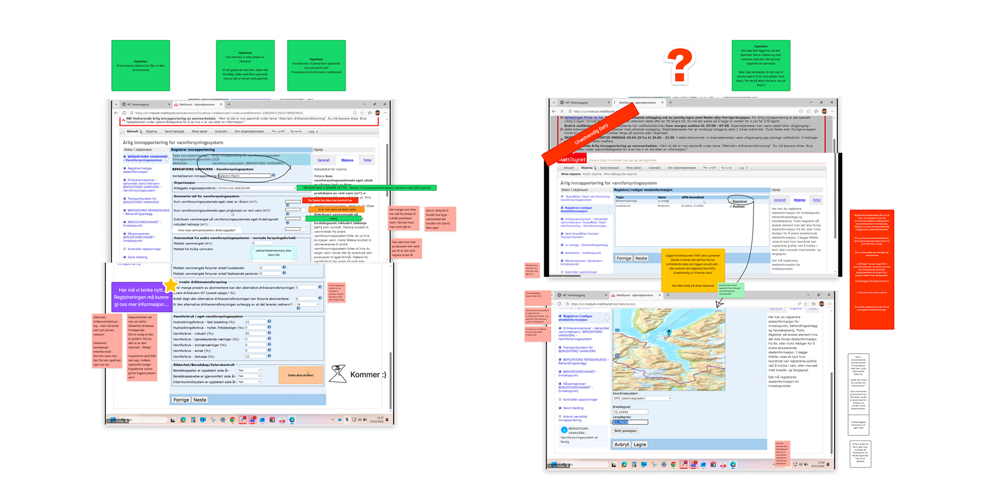
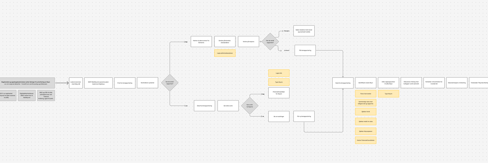
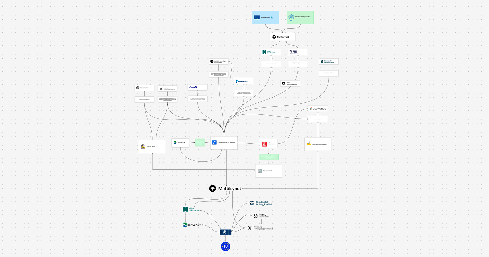
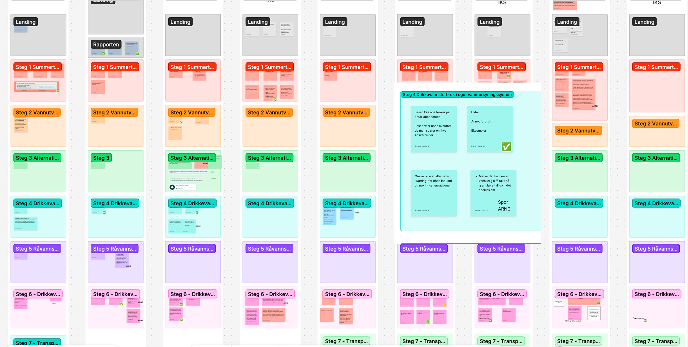

Mattilsynet · Lead Service Designer
Making drinking-water reporting easier to get right
Mattilsynet’s most complex reporting service had evolved inside a monolithic system over roughly 25 years.
For the people completing it, that meant a demanding reporting process with unnecessary effort and uncertainty. But the information also had to remain reliable for the officers and authorities that depend on it.
The challenge was to make the reporting easier to understand and complete without weakening the quality or meaning of the data.
Understanding both sides of the data
Research started with more than 15 municipal users.
The work exposed where reporting became difficult, where users were uncertain, and which parts created unnecessary effort. Findings were synthesised with the team so individual pain points could be understood as part of the wider service.
One recurring area was the handling and upload of analysis results.
A similar number of Mattilsynet officers were then interviewed to understand what happened to the same information after submission.
This connected two perspectives that had previously been easier to treat separately: the effort required to report the data and the work required to interpret it.
Paulo also participated in senior-level meetings to understand regulatory requirements and the future direction of the service.

Agreeing what could be simplified
The existing service was reconstructed in Miro using screens from the legacy system, research findings, rules, dependencies and open questions.
Stakeholders worked directly in the map through several workshops.
The group examined what still needed to exist, what could be removed, what could be simplified, and where the structure itself needed to change.
The map gradually became the project’s shared source of truth.
Instead of separate interpretations of the current system, research findings, regulatory requirements and proposed changes could be discussed in the same artefact.
That created agreement around a future direction before detailed prototyping began.
Making the direction tangible early
Once the direction was sufficiently clear, Paulo moved directly into a coded prototype.
OpenCode was used with several Anthropic and OpenAI models. Paulo selected models according to the task, balancing reasoning capability, vision and speed.
The prototype used real elements from Mattilsynet’s design system rather than representations of them in static screens.

This changed the fidelity of the discussion.
Complex flows, states and interactions could be experienced rather than inferred from images.
It also meant the prototype was closer to something development could inspect and reuse.
Letting evidence reshape the flow
The prototype became recognisable enough to involve Mattilsynet officers very early.
The first versions reflected the assumptions developed through research and stakeholder workshops. They were treated as a starting point, not a finished design.
Internal testing was followed by external testing with municipalities.
The prototype continued to evolve over several months, with hundreds of changes to terminology, structure, interaction and flow.
Changes included clearer terminology around the upload of drinking-water and raw-water samples, restructuring parts of the reporting flow, and adjusting how information was presented as new evidence emerged.
The important shift was that new evidence could move quickly into something testable.

Reducing ambiguity between design and development
The coded prototype also changed how the team worked.
Stakeholders no longer had to interpret what a static screen was intended to do. Meetings could centre on the same working artefact.
In some sessions, key stakeholders agreed a change and Paulo implemented it in the room.
That shortened the distance between discussion and validation.
It also changed the relationship with development.
The prototype did not replace developers. It gave them something substantially closer to implementation: real interaction, real design-system components and usable code.
Design intent no longer had to pass through as many layers of interpretation before reaching the product.

Using AI to shorten the path from evidence to implementation
AI supported more than the coded prototype.
Paulo created specialised Copilot agents for different types of project knowledge, including domain expertise, legal questions and the drinking-water regulation.
A research agent connected to the interview material supported work with qualitative evidence and established research practices.
The roles were deliberately different.
OpenCode supported making and iteration. The Copilot agents supported access to research, regulation and specialist knowledge.
Product framing, design decisions and validation remained grounded in research, stakeholder work and testing with users.
Result
The project produced a shared and tested direction for replacing a complex legacy reporting experience.
Research with both municipalities and officers connected problems across the full information flow.
The Miro model created alignment around what needed to change.
The coded prototype then made that direction tangible early enough to be challenged, tested and continuously refined.
AI changed the speed and fidelity of that loop, while the underlying design work remained grounded in research, regulation and collaboration.
The work produced a clearer, tested direction for the reporting experience, while shortening the path from evidence to decision to working software.